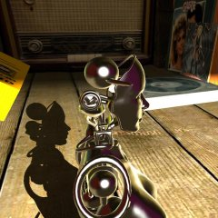
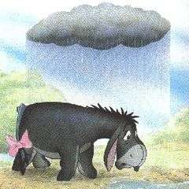
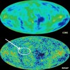

| News |
2015/11/10
I opened GitHub account and uploaded
Machina,
RAIN and
CiA. Archeologists and historicians, boot up your DOS beasts, it's time for massive distributed development!
| |
2012/05/03
Update: SVGA version on YouTube, thanks!
Anapurna is
on YouTube.
Thanks, 84marsel.
Unfortunately it's captured from early 236byte 320x200 version, not from final 640x480.
For a few seconds, I was thinking of capturing movie quality 1024x768 slow-motion
(which is actually 2 bytes shorter), but then reality struck back
and I went to change daugter's diaper.
| |
2011/01/06
7-dee is 7-zip modified to be even better.
| |
2009/05/15
Caribbean Blue on YouTube.
Pure nostalgy made me try this 9 years old 256b intro in DOSBox
only to find that DOSBox totally can't emulate my manly AdLib code.
N00ly saves the day! Psychically synchronized, he captured and uploaded this
6 channel tune one week ago.
|  |
2008/08/05
Lightsmark 2008 released, benchmark and demo of realtime global illumination.
|  |
2007/12/09
If you emailed me or Lightsprint in past and received no reply,
please try again, some emails were lost.
|  |
2007/10/24
Lightsmark 2007 released, new benchmark and demo of realtime global illumination.
| |
2007/3/2
Lightsprint Demo download.
Shows realtime global illumination in dynamic scene controlled by user.
| |
2006/9/3
RealtimeRadiosity.com
- my realtime radiosity blog starts.
While I post here at dee.cz only my releases, blog will be updated much often with links to interesting stuff other people do.
| |
2006/8/24
My initials on our universe.
NASA comments: This map of remnant heat from Big Bang provides
answers to fundamental questions about the origin and fate of our universe.
I always knew that.
|  |
2005
Excellent audio library FMOD switched
to unified API for all types of sound (samples, streams, modules..),
which is what RAIN has for six years.
| |
Old news...
|
|


{kind=link}